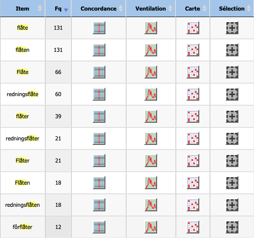
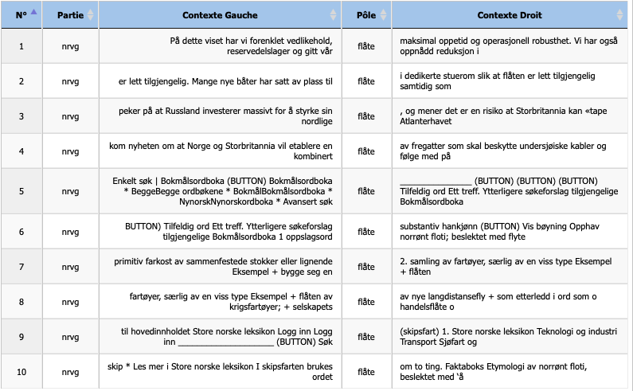
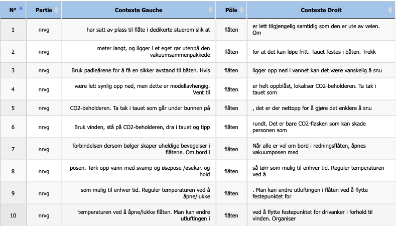
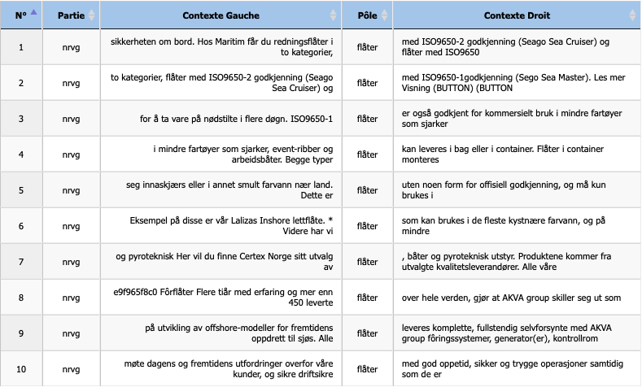

Analyse : Norvégien (Flåte)
Étude morphologique et contextuelle.
Avant de commencer l’analyse linguistique du mot flåte en norvégien, il est nécessaire de prendre en compte la morphologie de cette langue. Le norvégien repose sur un système morphologique flexionnel dans lequel les noms communs portent les marques de nombre et de définitude au moyen de suffixes.
Le mot flåte présente ainsi plusieurs formes morphologiques :
- flåte correspond au lemme, c’est-à-dire à la forme du singulier indéfini, généralement utilisée dans les définitions ou les descriptions.
- La forme flåten correspond au singulier défini (« la flotte »).
- Flåter est la forme du pluriel indéfini (« des flottes »).
- Flåtene correspond au pluriel défini (« les flottes »).
Ces différentes formes jouent un rôle important dans l’analyse en contexte, car elles ne sont pas employées dans les mêmes environnements linguistiques.
Une problématique se pose alors pour l’analyse : si l’on se limite à l’étude de la seule forme flåte, une part importante des occurrences risque de ne pas être prise en compte. En effet, les usages les plus fréquents du mot apparaissent souvent sous ses formes fléchies, notamment flåten, flåter et flåtene.
L’outil Itrameur permet d’identifier et de visualiser l’ensemble de ces formes au sein du corpus. Les résultats sont présentés dans le tableau dédié à l’analyse norvégienne.

Répartition des formes fléchies dans le corpus norvégien.
Les résultats présentés dans le tableau dédié à l’analyse norvégienne confirment la nécessité de cette approche inclusive.
L'examen des fréquences brutes révèle en effet une répartition équilibrée entre la forme indéfinie flåte (131 occurrences) et la forme définie singulière flåten (131 occurrences). Cette égalité statistique suggère une forte présence discursive d'entités référentielles spécifiques (telles que "la flotte marchande" ou un radeau particulier), autant que du concept général.
Plus significatif encore, l'extraction via iTrameur met en lumière la productivité morphologique du terme à travers les mots composés, qui portent souvent les distinctions sémantiques les plus fortes. On relève ainsi une fréquence notable du lemme redningsflåte (60 occurrences) et de son pluriel redningsflåter (21 occurrences). La présence de ce terme ("radeau de sauvetage"), ainsi que celle de fôrflåter (radeaux d'aquaculture, 12 occurrences), permet d'isoler immédiatement le sens matériel de "plateforme flottante", distinct du sens collectif de "groupe de navires".
Analyse en contexte du lemme “flåte”

L'examen des occurrences en contexte, tel que présenté dans la figure ci-contre, révèle une forte dépendance sémantique à l'environnement lexical immédiat (cooccurrents). Le concordancier permet de distinguer nettement trois champs d'application qui cohabitent au sein du même corpus.
Premièrement, le contexte militaire et géopolitique apparaît clairement lorsque le terme est associé à des noms de nations ("Norge", "Storbritannia", "Russland") ou à des types de navires de guerre ("fregatter"). Les lignes 3 et 4 illustrent parfaitement cet usage désignant une force navale organisée.
Deuxièmement, un contexte technique et logistique se dégage (ligne 1), où flåte est entouré d'un vocabulaire de gestion ("vedlikehold"/maintenance, "reservedelslager"/pièces détachées). Ici, le terme s'éloigne du sens maritime traditionnel pour se rapprocher de la notion de "parc" ou d'actif industriel à optimiser.
Enfin, la ligne 2 offre un exemple précieux du sens de "radeau" (objet physique individuel) employé sans composition. La mention de "dedikerte stuerom" (compartiments de rangement) sur des "båter" (bateaux) indique sans ambiguïté qu'il s'agit ici d'un équipement de survie embarqué, et non d'un groupe de navires.
Il est à noter qu'une part significative des concordances (lignes 5 à 10) relève du discours métalinguistique (extraits de dictionnaires ou d'encyclopédies comme le Store norske leksikon), qui explicitent justement cette double étymologie renvoyant tantôt à la "structure primitive en bois" (ligne 7), tantôt à la "collection de navires".
Analyse en contexte de la forme définie singulière

L'analyse se précise considérablement lorsque l'on isole la forme définie singulière flåten (« la flotte » / « le radeau »). Contrairement à la forme indéfinie qui présentait une forte polysémie, les résultats du concordancier pour flåten (figure ci-contre) font apparaître une spécialisation sémantique quasi-exclusive dans cet échantillon du corpus.
On observe ici un phénomène de monosémie contextuelle : toutes les occurrences visibles renvoient au sens matériel de "radeau de survie". Cette homogénéité s'explique par la nature "procédurale" des contextes d'apparition. En effet, la forme définie est ici utilisée pour désigner un objet spécifique que l'utilisateur doit manipuler en situation d'urgence.
L'environnement lexical est saturé par le vocabulaire technique de la sécurité maritime. Le terme flåten est systématiquement entouré de cooccurrents désignant des équipements de secours tels que "CO2-beholderen" (bonbonne de CO2, lignes 4-6), "padleårene" (les rames, ligne 3) ou encore "drivanker" (ancre flottante, ligne 10).
Plus encore, la syntaxe révèle un rapport physique immédiat à l'objet. Le terme est régi par des verbes d'action concrets, souvent à l'impératif ou à l'infinitif de but, décrivant des manœuvres de survie : il faut "snu" (retourner) le radeau s'il est "opp ned" (à l'envers), le "tipp [...] rundt" (renverser, ligne 6) ou encore réguler sa température interne ("regulere temperaturen", ligne 8).
Ainsi, alors que le lemme flåte servait de porte d'entrée aux concepts abstraits (marine, logistique), sa forme définie flåten semble, dans ce sous-ensemble du corpus, ancrer le discours dans la matérialité immédiate de l'objet technique flottant.
Analyse en contexte pour la forme indéfinie pluriel

Enfin, l'examen de la forme plurielle indéfinie flåter (« des radeaux » / « des flottes ») permet de basculer d'une perspective d'usage (manipuler le radeau) à une perspective de classification commerciale et industrielle.
Comme le montre le concordancier (figure ci-contre), le pluriel est ici privilégié pour décrire des gammes de produits ou des catégories d'équipements. Le discours devient technique et normatif : il est question de modèles disposant d'une "godkjenning" (homologation) ISO9650, livrables "i bag eller i container" (en sac ou conteneur). Le terme flåter ne désigne plus un objet unique en situation d'urgence, mais une commodité marchande destinée à équiper des "mindre fartøyer" (petits navires) ou des bateaux de pêche ("sjarker").
Mais c'est surtout l'apparition du composé fôrflåter (lignes 8 à 10) qui révèle une spécificité culturelle et économique majeure du corpus norvégien. Dans ce contexte d'aquaculture ("oppdrett"), le mot flåter change d'échelle pour désigner des infrastructures flottantes massives et autonomes. Associés à des termes comme "generator", "kontrollrom" (salle de contrôle) ou "fôringssystemer" (systèmes d'alimentation), ces flåter sont présentés comme des unités de production industrielle complexes.
Ainsi, l'analyse comparée des formes fléchies via iTrameur permet de dresser une carte sémantique précise : si flåte (singulier indéfini) porte l'ambiguïté polysémique et flåten (défini) la matérialité de la survie, flåter (pluriel) ancre le terme dans la réalité économique de la Norvège, entre équipement maritime standardisé et industrie piscicole de pointe.